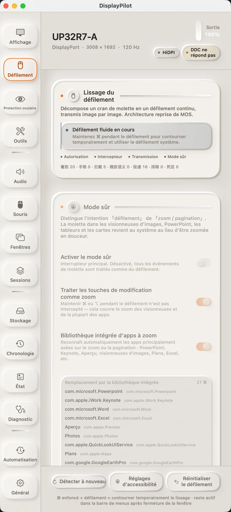

01 · Lissage du défilement
Un cran, transformé en un seul geste
Un cran de molette n'est plus un saut unique. Les événements sont accumulés, puis transmis à chaque rafraîchissement de l'écran — chaque image émettant pending × (1 − e^(−dt/τ)). Comme l'atténuation dépend du temps écoulé et non du nombre d'images, 60 Hz et 144 Hz donnent la même sensation. Dans notre benchmark hors ligne, la première image à 120 Hz est passée de 3 à 9 points, et le temps pour atteindre 90 % de 158 ms à 133 ms.
Les fenêtres qui traitent la molette comme une entrée de précision ou un zoom — terminaux, visionneuses d'images, diaporamas — sont rendues au système par défaut. Maintenez ⌘ à tout moment pour revenir au défilement natif. Le lissage est désactivé par défaut : il ne prend jamais la main sur votre molette si vous ne l'activez pas. L'interface affiche quatre compteurs en direct — vus, geste, interceptés, transmis — pour qu'avec une nouvelle souris, vous voyiez immédiatement à quelle couche cela bloque.
